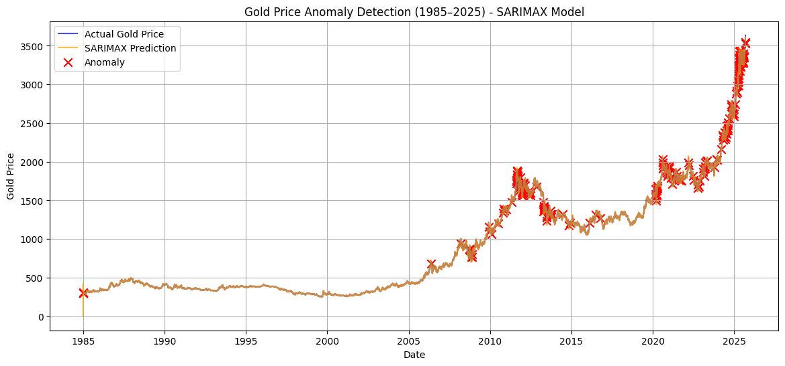
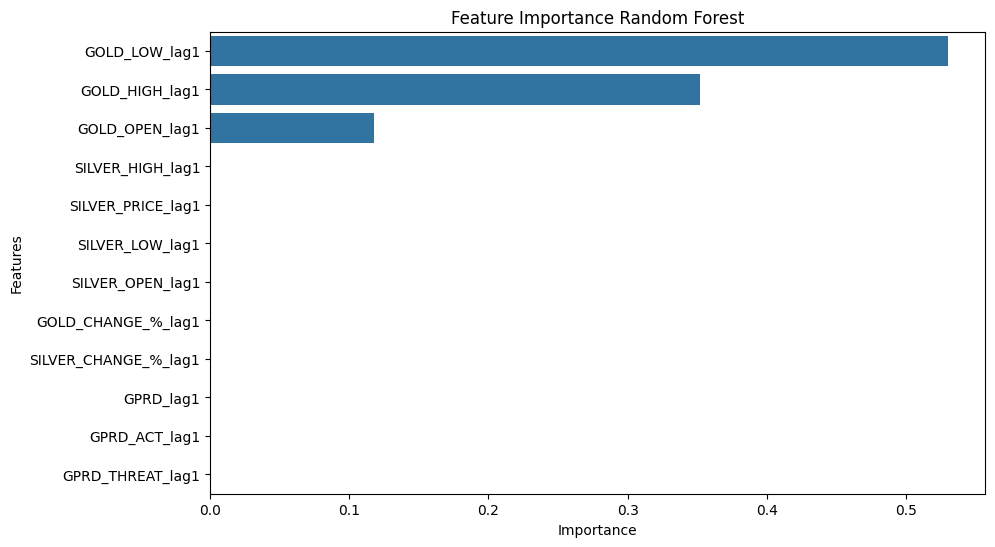
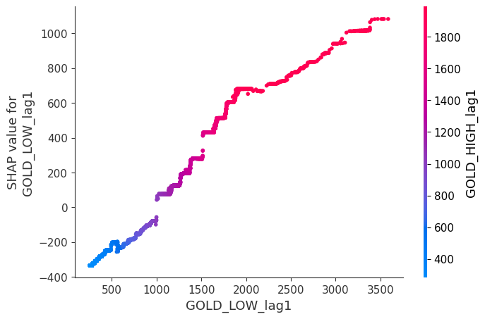

Analisis Historis Fluktuasi Harga Emas Periode 1985–Pertengahan 2025
Emas merupakan salah satu alat tukar pertama dalam peradaban manusia, selain perak dan tembaga. Sejak zaman kuno, logam mulia ini digunakan tidak hanya sebagai media pertukaran, tetapi juga sebagai simbol kekayaan dan penyimpan nilai. Dalam era modern, emas tetap menjadi pilihan utama untuk menjaga dan melindungi aset karena nilainya yang relatif stabil dan cenderung meningkat dari waktu ke waktu. Berbeda dengan mata uang yang dapat tergerus inflasi, emas sering dianggap sebagai safe haven atau aset lindung nilai. Oleh karena itu, memahami bagaimana harga emas berubah dari tahun ke tahun serta mengidentifikasi faktor-faktor eksternal yang memengaruhinya menjadi hal yang sangat penting untuk pertimbangan ekonomi dan investasi di masa mendatang.
Dalam artikel ini dilakukan analisis terhadap harga emas Periode 1985–Pertengahan 2025. Data yang digunakan merupakan hasil penggabungan antara data pasar harian emas dan perak dengan Indeks Risiko Geopolitik (GPRD)[8], sehingga memberikan perspektif jangka panjang mengenai bagaimana peristiwa global memengaruhi harga logam mulia tersebut. Analisis diawali dengan penerapan model ARIMA guna mengamati pola dan tren pergerakan harga emas dalam jangka panjang. Hasil dari model ini dapat dilihat pada tabel berikut :
Tabel 1. Hasil Analisis Model ARIMA (5, 2, 0) Terhadap Variabel Harga Emas (GOLD_PRICE)
| AR Coef | coef | std err | P>|z| |
|---|---|---|---|
| ar.L1 | -0.8237 | 0.004 | < 0.001 |
| ar.L2 | -0.6636 | 0.005 | < 0.001 |
| ar.L3 | -0.4905 | 0.005 | < 0.001 |
| ar.L4 | -0.3324 | 0.005 | < 0.001 |
| ar.L5 | -0.1678 | 0.004 | < 0.001 |
| σ2 | 150.49 | 0.735 | < 0.001 |
Berdasarkan hasil analisis menggunakan model ARIMA(5) terhadap data harga emas periode 1985 hingga pertengahan tahun 2025, diperoleh pola historis yang menunjukkan bahwa pergerakan harga emas memiliki kecenderungan berosilasi dalam jangka pendek. Hal ini ditunjukkan oleh seluruh koefisien autoregresif (AR1 hingga AR5) yang bernilai negatif dan signifikan, yang mengindikasikan bahwa setiap kenaikan harga pada hari tertentu cenderung diikuti oleh penurunan pada hari berikutnya, dan sebaliknya. Dengan demikian, harga emas menunjukkan karakteristik mean reversion, yaitu kecenderungan untuk kembali ke nilai keseimbangannya setelah mengalami fluktuasi yang cukup besar.
Secara lebih rinci, pola osilasi jangka pendek yang teridentifikasi dari model ARIMA(5) menunjukkan bahwa harga emas cenderung mengalami koreksi setelah mengalami kenaikan berturut-turut, dan sebaliknya berpotensi rebound setelah penurunan yang berlanjut. Jika kenaikan harga terjadi selama dua hingga tiga hari berturut-turut, peluang koreksi semakin meningkat, sedangkan apabila tren positif berlangsung hingga lima hari, koreksi hampir selalu terjadi. Sebaliknya, ketika harga turun selama beberapa hari berturut-turut, tekanan jual biasanya diikuti oleh aksi beli kembali yang memicu pemulihan harga. Setelah periode naik dan turun secara bergantian, harga emas cenderung kembali menuju titik keseimbangannya dalam dua hingga tiga hari berikutnya sebelum membentuk tren baru. Pola ini menunjukkan bahwa dinamika harga emas tidak bersifat acak, melainkan dipengaruhi oleh perilaku pasar yang reflektif terhadap aksi ambil untung (profit taking) dan pembelian kembali (buyback) setelah penurunan. Selain faktor teknikal tersebut, fluktuasi harga emas juga dapat dipengaruhi oleh faktor eksternal seperti ketegangan geopolitik atau kondisi ekonomi global yang tidak stabil. Oleh karena itu, pada tahap selanjutnya dilakukan analisis anomali dari data historis untuk mengidentifikasi pengaruh peristiwa eksternal terhadap dinamika harga emas, yang hasilnya ditampilkan dalam gambar berikut.

Gambar 1. Grafik hasil model ARIMA (5,2,0) terhadap variabel GOLD_PRICE dengan deteksi anomali.
Gambar tersebut menunjukkan hasil pemodelan ARIMA terhadap data historis harga emas, yang mengidentifikasi sekitar 200 anomali dari keseluruhan data. Beberapa anomali dengan nilai penyimpangan terbesar ditampilkan dalam tabel berikut :
Tabel 2. Hasil Deteksi Anomali dengan Tujuh Nilai Terbesar dari Model ARIMA (5,2,0)
| TGL | Residual | Harga Aktual (USD/oz) | Prediksi Model (USD/oz) |
|---|---|---|---|
| 2025-04-09 | 121.60942 | 3082.18 | 2960.57058 |
| 2025-05-05 | 111.398061 | 3334.50 | 3223.101939 |
| 2025-05-15 | 105.486153 | 3240.87 | 3135.383847 |
| 2025-04-10 | 95.163134 | 3173.92 | 3078.756866 |
| 2025-05-06 | 92.281900 | 3430.21 | 3337.928100 |
| 2025-06-02 | 91.799221 | 3380.21 | 3288.410779 |
| 2008-09-17 | 89.679816 | 864.20 | 774.520184 |
Pada tanggal-tanggal dengan residual yang cukup tinggi tersebut terjadi beberapa paristiwa yang diduga sebagai faktor penyebab yang berpengaruh terhadap harga emas diantaranya :
- Pada tanggal 09-04-2025
Meningkatnya ketegangan perdagangan AS–RRT dan peningkatan permintaan safe haven.
Hal ini terjadi setelah Presiden AS Donald Trump mengumumkan tarif baru dan China membalas
dengan tindakan balasan. Ketidakpastian ini juga menyebabkan melemahnya Dolar AS,
sehingga emas menjadi lebih menarik bagi para investor internasional[1].
-Pada tanggal 05-05-2025
Ketidakpastian ekonomi global yang sedang berlangsung, risiko tarif,
dan pelemahan dolar AS secara luas. Harga tetap tinggi
karena kekhawatiran investor terhadap isu-isu global
tetap ada meskipun ada beberapa perkembangan
perdagangan yang positif[2].
-Pada tanggal 15-05-2025
Harga emas mengalami penurunan korektif, penurunan ini
terutama dipicu oleh kebangkitan dolar AS,
peningkatan optimisme pasar setelah de-eskalasi
ketegangan perdagangan AS-RRT, dan data ekonomi
AS yang menggembirakan[3].
-Pada tanggal 10-04-2025
Harga emas melonjak ke rekor tertinggi baru
di level $3.171,49 per ons, terutama didorong oleh
meningkatnya kekhawatiran perang dagang AS-Tiongkok
dan aksi beli safe haven di tengah melemahnya
dolar AS. Harga naik 2,6% pada hari itu. Reli (kenaikan
harga yang tajam) ini
dipicu meskipun Presiden AS Donald Trump
mengumumkan penangguhan sementara tarif untuk
beberapa negara lain, karena ia secara bersamaan
menaikkan tarif untuk barang-barang China[4].
-Pada tanggal 06-05-2025
Harga emas mengalami kenaikan moderat, didorong oleh
ketidakpastian ekonomi global yang berkelanjutan,
ketegangan geopolitik yang sedang berlangsung, dan
melemahnya dolar AS. Kenaikan ini terjadi setelah
periode fluktuasi dan mencerminkan permintaan
investor akan aset safe haven di pasar yang bergejolak[5].
-Pada tanggal 02-06-2025
Harga emas naik lebih dari 2% ke level tertinggi
dalam beberapa hari, didorong oleh meningkatnya
permintaan terhadap aset safe haven. Kenaikan ini
terutama dipicu oleh eskalasi ketegangan geopolitik
dan perdagangan, yang diperparah oleh retorika
Presiden AS Donald Trump serta meningkatnya konflik
antara Rusia dan Ukraina. Selain itu, pelemahan
dolar AS dan ketidakpastian makroekonomi yang
berkelanjutan turut memberikan dukungan terhadap
penguatan harga emas[6].
-Pada tanggal 17-9-2008
Harga emas sempat mengalami penurunan sebagai
bagian dari aksi jual jangka pendek yang terjadi
setelah runtuhnya Lehman Brothers. Meskipun
secara keseluruhan harga emas menunjukkan tren
kenaikan selama krisis keuangan 2008, fase awal
krisis ditandai oleh “krisis likuiditas,” ketika
para investor terpaksa melikuidasi aset-aset
safe haven seperti emas untuk menutup kerugian
di pasar lainnya[7].
Dari beberapa anomali dengan nilai terbesar yang terdeteksi, sebagian besar dipengaruhi oleh ketidakstabilan kondisi geopolitik global. Untuk memahami pengaruhnya lebih dalam, dilakukan analisis lanjutan menggunakan regresi polinomial terhadap faktor-faktor eksternal seperti Geopolitical Risk Index (GPRD), Geopolitical Acts Index (GPRD act), dan Geopolitical Threat Index (GPRD threat). Selain itu, analisis juga mencakup faktor harga perak (Silver), mengingat pergerakannya sering berkorelasi dengan emas. Hasil analisis tersebut ditampilkan pada tabel berikut :
Tabel 3. Hasil Analisis Regresi Polinomial terhadap Variabel-variabel yang Diduga Mempengaruhi GOLD_PRICE
| Variabel | Coef | STD ERR | P > |t| |
|---|---|---|---|
| GOLD_HIGH | 0.387 | 0.006 | < 0.001 |
| SILVER_PRICE | 0.29 | 0.008 | < 0.001 |
| GOLD_CHANGE_% | 0.0065 | 7.55E-05 | < 0.001 |
| SILVER_PRICE × GOLD_CHANGE_% | 0.012 | 0.003 | < 0.001 |
| SILVER_HIGH² | 0.2257 | 0.052 | < 0.001 |
| GPRD² | 0.003 | 0.001 | < 0.001 |
| GPRD_ACT × GPRD_THREAT | 0.002 | 0.001 | < 0.001 |
| GPRD_THREAT × GOLD_CHANGE_% | 0.0016 | 0 | < 0.001 |
Hasil regresi polynomial menunjukkan bahwa pergerakan harga emas sangat dipengaruhi oleh kombinasi faktor internal, eksternal, dan kondisi geopolitik global. Faktor internal yang paling dominan adalah harga tertinggi harian (GOLD_HIGH) dengan koefisien sebesar 0.387, menandakan bahwa setiap kenaikan harga tertinggi harian memiliki kontribusi positif yang signifikan terhadap harga emas berikutnya. Selain itu, persentase perubahan emas (GOLD_CHANGE_%) juga menunjukkan pengaruh positif meskipun dengan nilai koefisien yang relatif kecil, menegaskan bahwa volatilitas jangka pendek tetap menjadi faktor penting dalam dinamika pasar emas.
Dari sisi eksternal, harga perak (SILVER_PRICE) memiliki pengaruh kuat terhadap harga emas dengan koefisien 0.29, memperlihatkan adanya keterkaitan yang erat antara dua logam mulia tersebut. Bahkan, interaksi antara SILVER_PRICE × GOLD_CHANGE_% yang signifikan secara statistik menunjukkan bahwa ketika harga perak dan emas sama-sama meningkat, efek gabungannya memperkuat kenaikan harga emas. Hal ini diperkuat oleh pengaruh SILVER_HIGH², yang mengindikasikan adanya hubungan non-linear antara level tertinggi harga perak dan harga emas.
Sementara itu, faktor geopolitik juga memainkan peran penting. Variabel GPRD² yang signifikan menunjukkan bahwa ketegangan geopolitik memiliki efek non-linear terhadap harga emas — di mana eskalasi konflik atau ancaman global cenderung mendorong lonjakan harga. Interaksi antara GPRD_ACT × GPRD_THREAT serta GPRD_THREAT × GOLD_CHANGE_% semakin menegaskan bahwa harga emas sensitif terhadap kombinasi ancaman dan aksi nyata di bidang geopolitik, terutama ketika kondisi pasar sedang berfluktuasi.
Meskipun model polynomial mampu menggambarkan hubungan-hubungan tersebut dengan baik, sifat pasar emas yang kompleks dan penuh interaksi non-linear menuntut pendekatan yang lebih fleksibel. Oleh karena itu, analisis dilanjutkan menggunakan model Random Forest, yang memiliki kemampuan lebih kuat dalam menangkap hubungan non-linear, interaksi antar variabel, serta memberikan informasi mengenai tingkat kepentingan masing-masing faktor (feature importance). Pendekatan ini diharapkan dapat memberikan validasi yang lebih komprehensif terhadap hasil regresi polynomial dan mengidentifikasi variabel-variabel utama yang benar-benar mendorong fluktuasi harga emas. Hasilnya ditampilakn sebagai berikut :

Gambar 2. Hasil Analisis Random Forest dengan Feature importance
Hasil analisis menggunakan model Random Forest (feature importance) menunjukkan bahwa faktor yang paling berpengaruh terhadap harga emas adalah harga emas terendah (GOLD_LOW), harga emas tertinggi (GOLD_HIGH), dan harga pembukaan emas (GOLD_OPEN). Sebaliknya, variabel lain seperti harga perak (Silver) dan indeks geopolitik (GPRD) memiliki tingkat kepentingan yang relatif rendah dan tidak dianggap signifikan oleh model ini. Menariknya, hasil tersebut berbeda dengan temuan pada model Regresi Polinomial, yang justru menunjukkan bahwa faktor eksternal seperti harga perak dan indeks geopolitik berpengaruh signifikan terhadap pergerakan harga emas. Perbedaan ini kemungkinan disebabkan oleh adanya multikolinearitas antar variabel, yaitu ketika beberapa variabel saling berkorelasi kuat sehingga model regresi dapat “menilai penting” variabel yang sebenarnya sudah terwakili oleh variabel lain. Lebih lanjut, faktor eksternal seperti GPRD dapat tercermin secara tidak langsung melalui dinamika harga emas itu sendiri, karena harga emas kerap mencerminkan kondisi ekonomi dan geopolitik global. Untuk memperdalam pemahaman terhadap interaksi antar variabel, dilakukan pula analisis SHAP value dependence plot guna melihat hubungan non-linear serta arah pengaruh antara dua variabel paling berperan terhadap pembentukan harga emas. Hasilnya ditampilkan dalam gambar berikut:

Gambar 3. Grafik SHAP Value dengan Interaksi Non-Linear antara Dua Variabel dengan Feature Importance Tertinggi
Berdasarkan hasil SHAP value plot, terlihat bahwa variabel GOLD_LOW memiliki pengaruh positif yang konsisten terhadap harga emas. Peningkatan pada harga terendah harian menunjukkan adanya dorongan naik terhadap harga emas secara keseluruhan. Warna pada plot yang merepresentasikan GOLD_HIGH memperlihatkan bahwa ketika nilai GOLD_HIGH juga berada pada level tinggi, pengaruh GOLD_LOW terhadap harga emas menjadi semakin kuat. Temuan ini mengindikasikan adanya interaksi positif antara kedua variabel tersebut; kombinasi kenaikan harga tertinggi dan terendah harian mencerminkan sentimen pasar yang optimistis dan turut mendorong peningkatan harga emas.
Kesimpulan Umum:
Berdasarkan hasil analisis historis terhadap
data harga emas periode 1985–2025 menggunakan
berbagai pendekatan model statistik dan machine
learning, diperoleh gambaran komprehensif mengenai
pola dan mekanisme pergerakan harga emas.
Analisis dengan model ARIMA(5) menunjukkan
bahwa harga emas cenderung berosilasi dalam
jangka pendek dan memiliki sifat mean reversion,
yaitu kecenderungan untuk kembali ke nilai
keseimbangannya setelah mengalami fluktuasi
yang tajam. Seluruh koefisien autoregresif
yang bernilai negatif menegaskan adanya pola
koreksi alami, dengan kenaikan harga biasanya
diikuti oleh penurunan, dan sebaliknya. Pola
ini menunjukkan bahwa pergerakan harga emas
tidak bersifat acak, melainkan mengikuti
siklus jangka pendek yang dipengaruhi oleh
perilaku pasar seperti aksi ambil untung (profit taking)
dan pembelian kembali (buyback) setelah penurunan harga.
Sementara itu, hasil dari model Random Forest mengungkap bahwa faktor internal pasar emas memiliki pengaruh paling dominan terhadap pembentukan harga, terutama harga terendah (GOLD_LOW), harga tertinggi (GOLD_HIGH), dan harga pembukaan (GOLD_OPEN). Sebaliknya, faktor eksternal seperti harga perak (Silver) dan indeks geopolitik (GPRD) berperan relatif kecil. Namun demikian, pengaruh eksternal tersebut tampaknya tercermin secara tidak langsung dalam dinamika harga emas itu sendiri, mengingat emas sering bereaksi terhadap kondisi ekonomi global dan ketegangan geopolitik. Beberapa anomali dengan nilai tertinggi yang terdeteksi juga bertepatan dengan periode ketidakstabilan geopolitik dunia, memperkuat keterkaitan antara faktor eksternal dan fluktuasi pasar emas.
Lebih lanjut, analisis SHAP value plot memperjelas bahwa GOLD_LOW memiliki pengaruh positif yang konsisten terhadap harga emas, dan efek ini semakin kuat ketika GOLD_HIGH juga meningkat. Hal ini menunjukkan adanya interaksi positif antara kedua variabel tersebut, dengan kombinasi kenaikan harga tertinggi dan terendah harian mencerminkan sentimen pasar yang optimistis terhadap emas. Dengan demikian, keseluruhan hasil analisis ini menegaskan bahwa harga emas historis terbentuk melalui interaksi kompleks antara faktor teknikal dan fundamental, dengan pola yang berulang dan terpengaruh oleh dinamika psikologis serta kondisi ekonomi global.
Referensi
[1] CNN Business, “Trump announces 90-day pause on 'reciprocal' tariffs with allies,” Apr. 9, 2025. [Online]. Available: https://edition.cnn.com/2025/04/09/business /reciprocal-tariff-pause-trump
[2] Mandiri Investasi, “Global Market Commentary – May 2025,” May 2025. [Online]. Available: https://www.mandiri-investasi.co.id/en/articles /market-update-articles/global-market-commentary-may-2025/
[3] Reuters, “Gold prices climb over 1% as Trump hikes China tariffs,” Apr. 10, 2025. [Online]. Available: https://www. reuters.com/markets/commodities/gold-prices-climb-over -1-trump-hikes-china-tariffs-2025-04-10/
[4] Kitco News, “Gold price analysis: Navigating trade tensions, dollar concerns and Fed policy,” May 6, 2025. [Online]. Available: https: //www.kitco.com/opinion/2025-05-06/gold- price-analysis-navigating-trade-tensions- dollar-concerns-and-fed-policy
[5] Reuters, “Gold prices climb as tariff jitters lift safe-haven demand,” Jun. 2, 2025. [Online]. Available: https://www.reuters.com/world/india/ gold-prices-climb-tariff-jitters-lift-safe- haven-demand-2025-06-02/
[6] CFI Financial, “What’s driving gold prices right now,” 2025. [Online]. Available: https://cfi.trade/en/lb/blog /commodities/whats-driving-gold-prices-right-now
[7] AJ Bell, “Gold keeps falling – it did the same in 2008 and then look what happened,” 2025. [Online]. Available: https://www.ajbell.co.uk/group/news/gold-keeps -falling-it-did-same-2008-and-then-look-what-happened
[8] Dangi, S. (2025). Gold & Silver Price vs Geopolitical Risk (1985–2025). Kaggle. Retrieved from: https://www.kaggle.com/datasets/shreyanshdangi /gold-silver-price-vs-geopolitical-risk-19852025
Komentar